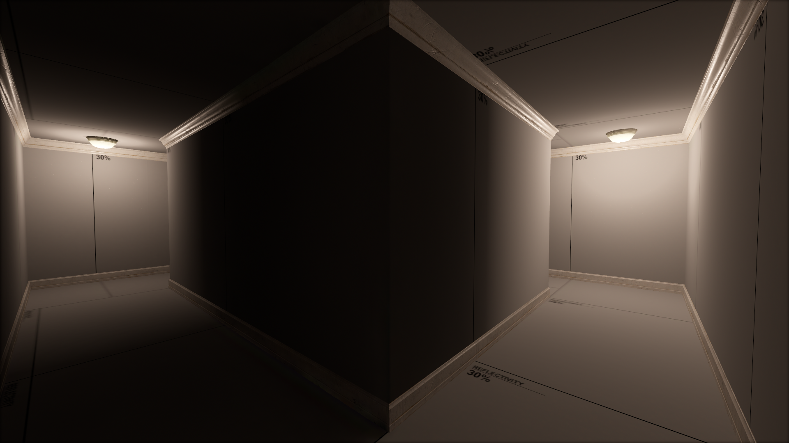
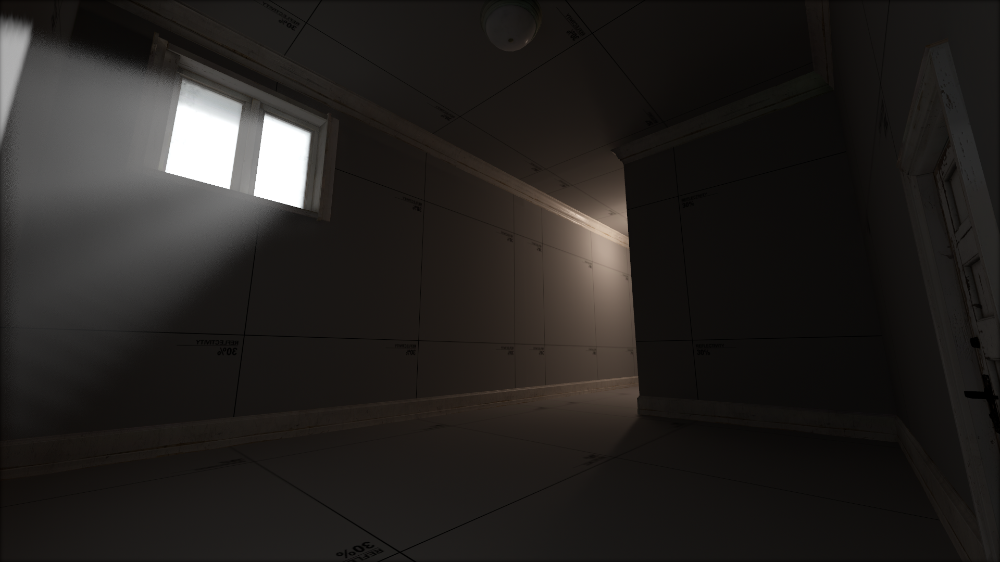
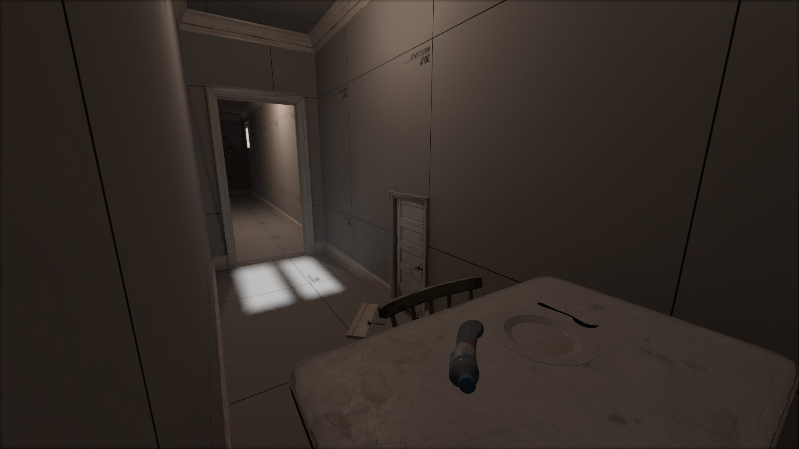
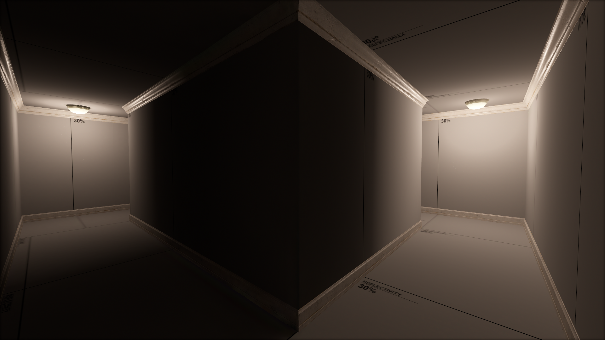
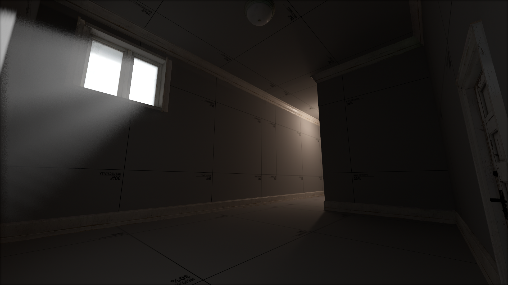
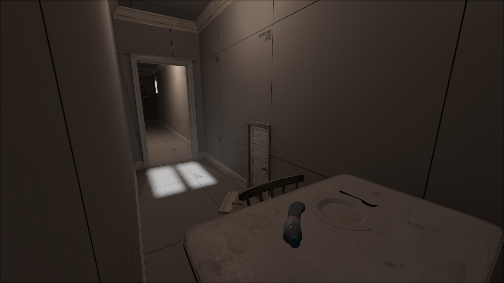

Helpful Batch Scripts
A helpful script for modding in Source 2. It adds a couple extra launch options to allow for modding for SteamVR Home without VR, basically for people who don't have s&box and don't want to buy Half-Life: Alyx.
https://github.com/Plaonder/SteamVRWorkshop-NonVRNeed to record this video still so take this instead :D
Source 2
 





A map called Non-Euclidean Testing (working title), I did not expect to get this map past the idea stage, but on YouTube it ended up blowing up. This has given me the motivation to continue working on the map and turn it into something really cool.
More details soon.
The outside area to the map, very early but it's looking good so far, the idea is that it's an apartment building.
A video demonstrating the Non-Euclidean map.
Unity
A wallrunning game I'm working on. You get some wallrunning, and low gravity. I do highlight some issues with it, but overall a prototype that I'm happy with for once.
Blender
Just a few extra things I did in Blender.
Gumbe